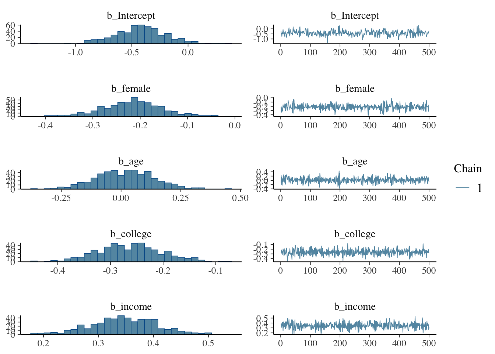
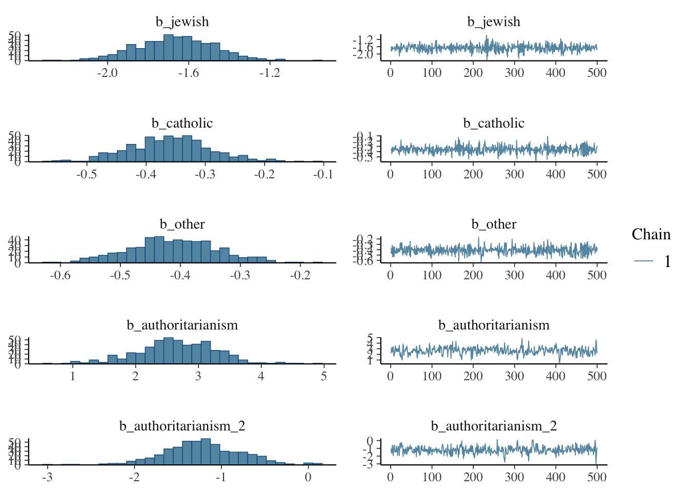
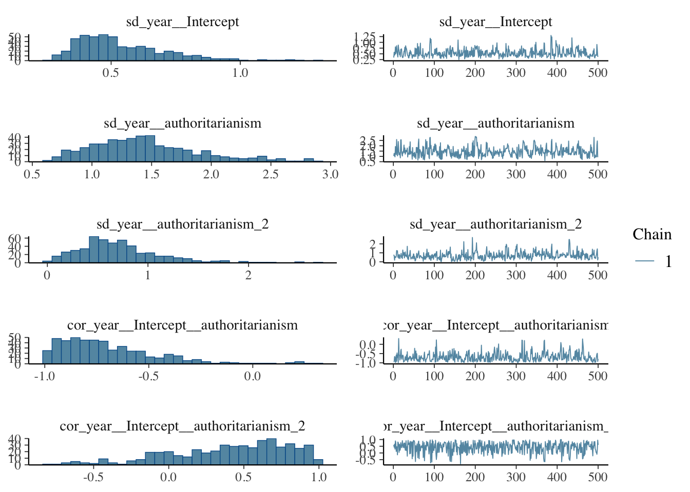
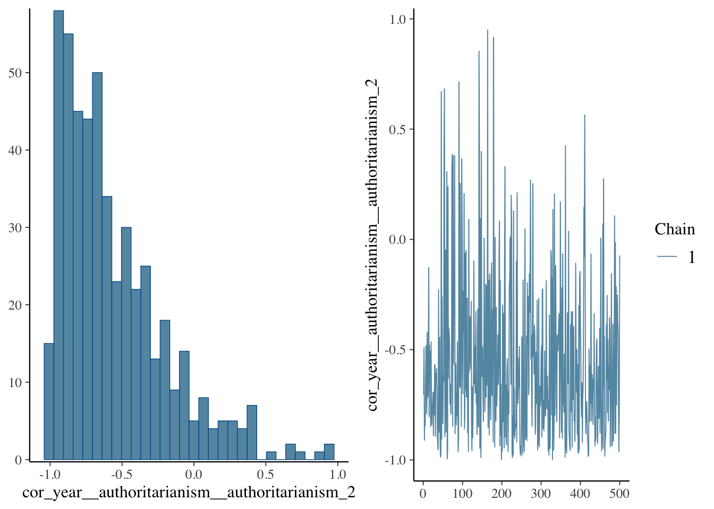
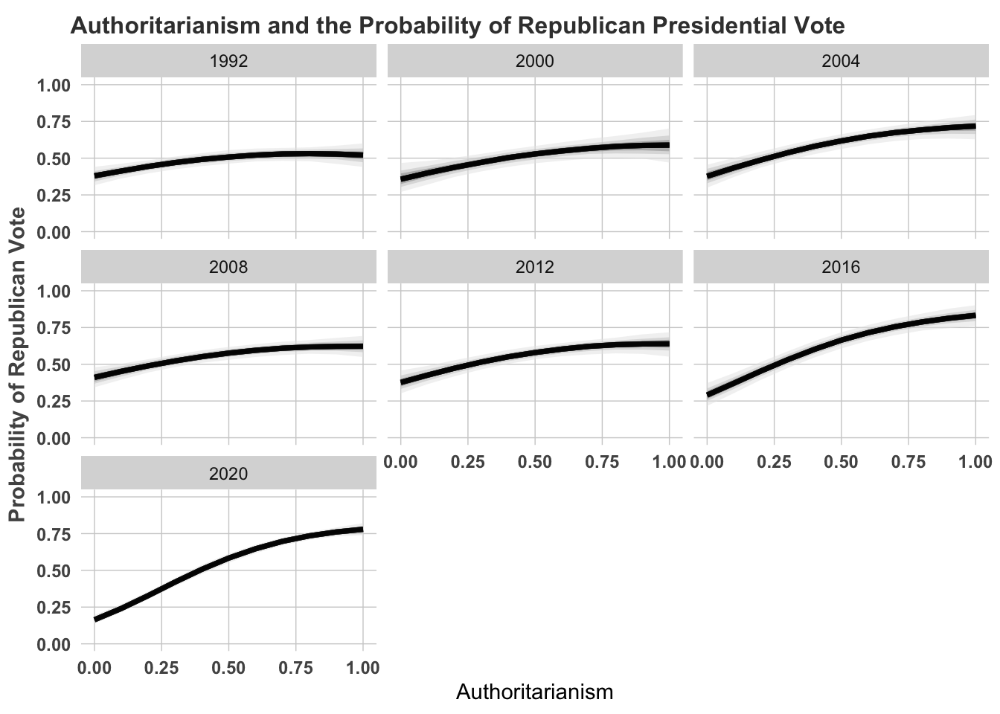
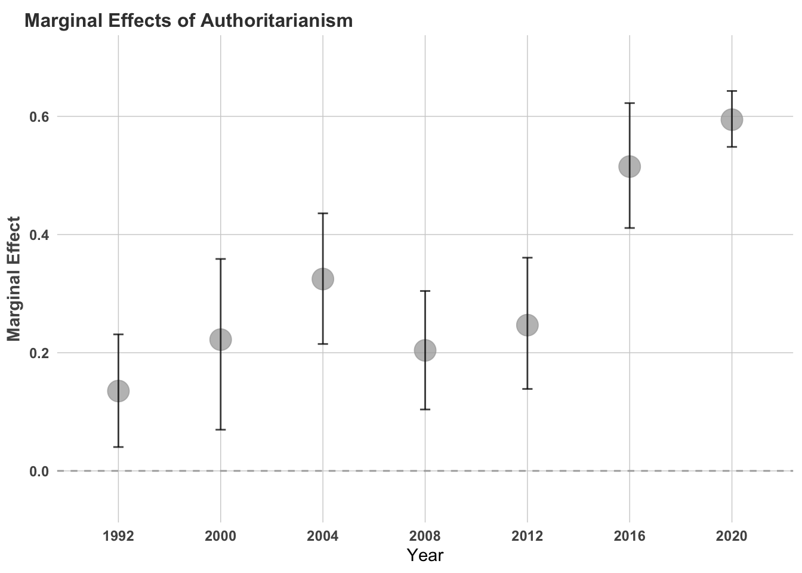
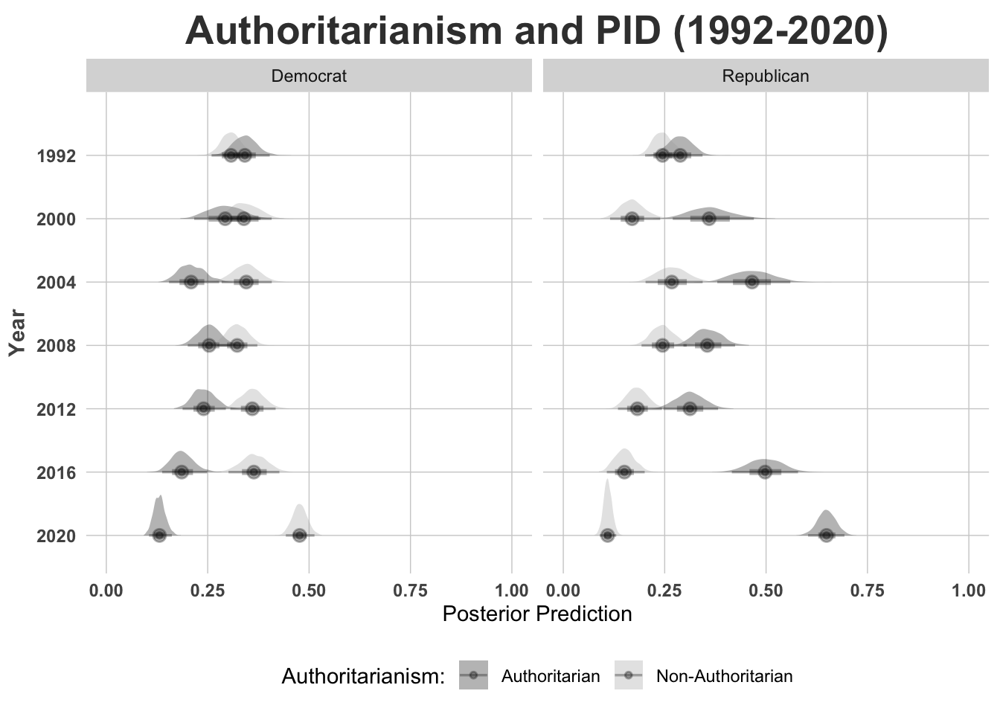

Chapter 12 Estimation
Let’s now turn to an an example, a test case in how to estimate a multilevel model.
## [1] 6023 11## vote authoritarianism female age college income jewish catholic other
## 3 1 0.75 0 0.4000 0 1 0 0 0
## 4 0 0.25 0 0.4125 1 0 0 0 1
## 10 1 0.25 1 0.3750 1 1 0 0 0
## 12 1 0.00 0 0.4000 1 0 0 1 0
## 18 0 0.50 1 0.6625 0 0 0 1 0
## 21 1 0.50 1 0.4875 0 1 0 0 0
## year authoritarianism_2
## 3 2000 0.5625
## 4 2004 0.0625
## 10 2004 0.0625
## 12 2012 0.0000
## 18 2012 0.2500
## 21 2000 0.250012.1 Background
The data consist of American National Election Studies (ANES) cross sections, from 1992-2020. There was a fair amount of “data wrangling” that went into putting this all together, but now the data are in a format conducive to a multilevel model. This is an RCS design, where units are nested in cross sections (Lebo and Weber 2014).
We’ll estimate a multilevel model in a few ways, but let’s start with the bayesian approach, using \(\texttt{brms}\) package in R. The model is as follows.
\[pr(y_{i,t}| x_{i, t}; x^2_{ i, t}; z_{k, i, t}) =\beta_{0,k} + \beta_{1,t} x_{ i, t} + \beta_{2,t} x_{i, t}^2 + \sum_{k=1}^K \beta_k z_{k,i} + \epsilon_{t} + \epsilon_{i,t}\]
where \(K\) denotes the number of control variables, \(t\) cross-sectional year, and \(i\), the \(i\)th respondent (nested within the \(t\) ANES survey). Non-informative priors were used for all the parameters, and the correlations between slopes and intercepts were always estimated (with the exception of the random intercept only model).
12.2 Estimate the Model in \(\texttt{brms}\)
model <- brm(vote~ female + age + college + income + jewish +
catholic + other + authoritarianism + authoritarianism_2 +
(1+authoritarianism + authoritarianism_2|year),
family = bernoulli(link = "logit"),
data = df,
chains = 1, cores = 8, seed = 1234,
iter = 1000)## Compiling Stan program...## Trying to compile a simple C file## Running /Library/Frameworks/R.framework/Resources/bin/R CMD SHLIB foo.c
## using C compiler: ‘Apple clang version 16.0.0 (clang-1600.0.26.4)’
## using SDK: ‘’
## clang -arch arm64 -I"/Library/Frameworks/R.framework/Resources/include" -DNDEBUG -I"/Library/Frameworks/R.framework/Versions/4.3-arm64/Resources/library/Rcpp/include/" -I"/Library/Frameworks/R.framework/Versions/4.3-arm64/Resources/library/RcppEigen/include/" -I"/Library/Frameworks/R.framework/Versions/4.3-arm64/Resources/library/RcppEigen/include/unsupported" -I"/Library/Frameworks/R.framework/Versions/4.3-arm64/Resources/library/BH/include" -I"/Library/Frameworks/R.framework/Versions/4.3-arm64/Resources/library/StanHeaders/include/src/" -I"/Library/Frameworks/R.framework/Versions/4.3-arm64/Resources/library/StanHeaders/include/" -I"/Library/Frameworks/R.framework/Versions/4.3-arm64/Resources/library/RcppParallel/include/" -I"/Library/Frameworks/R.framework/Versions/4.3-arm64/Resources/library/rstan/include" -DEIGEN_NO_DEBUG -DBOOST_DISABLE_ASSERTS -DBOOST_PENDING_INTEGER_LOG2_HPP -DSTAN_THREADS -DUSE_STANC3 -DSTRICT_R_HEADERS -DBOOST_PHOENIX_NO_VARIADIC_EXPRESSION -D_HAS_AUTO_PTR_ETC=0 -include '/Library/Frameworks/R.framework/Versions/4.3-arm64/Resources/library/StanHeaders/include/stan/math/prim/fun/Eigen.hpp' -D_REENTRANT -DRCPP_PARALLEL_USE_TBB=1 -I/opt/R/arm64/include -fPIC -falign-functions=64 -Wall -g -O2 -c foo.c -o foo.o
## In file included from <built-in>:1:
## In file included from /Library/Frameworks/R.framework/Versions/4.3-arm64/Resources/library/StanHeaders/include/stan/math/prim/fun/Eigen.hpp:22:
## In file included from /Library/Frameworks/R.framework/Versions/4.3-arm64/Resources/library/RcppEigen/include/Eigen/Dense:1:
## In file included from /Library/Frameworks/R.framework/Versions/4.3-arm64/Resources/library/RcppEigen/include/Eigen/Core:19:
## /Library/Frameworks/R.framework/Versions/4.3-arm64/Resources/library/RcppEigen/include/Eigen/src/Core/util/Macros.h:679:10: fatal error: 'cmath' file not found
## 679 | #include <cmath>
## | ^~~~~~~
## 1 error generated.
## make: *** [foo.o] Error 1## Start sampling##
## SAMPLING FOR MODEL 'anon_model' NOW (CHAIN 1).
## Chain 1:
## Chain 1: Gradient evaluation took 0.000705 seconds
## Chain 1: 1000 transitions using 10 leapfrog steps per transition would take 7.05 seconds.
## Chain 1: Adjust your expectations accordingly!
## Chain 1:
## Chain 1:
## Chain 1: Iteration: 1 / 1000 [ 0%] (Warmup)
## Chain 1: Iteration: 100 / 1000 [ 10%] (Warmup)
## Chain 1: Iteration: 200 / 1000 [ 20%] (Warmup)
## Chain 1: Iteration: 300 / 1000 [ 30%] (Warmup)
## Chain 1: Iteration: 400 / 1000 [ 40%] (Warmup)
## Chain 1: Iteration: 500 / 1000 [ 50%] (Warmup)
## Chain 1: Iteration: 501 / 1000 [ 50%] (Sampling)
## Chain 1: Iteration: 600 / 1000 [ 60%] (Sampling)
## Chain 1: Iteration: 700 / 1000 [ 70%] (Sampling)
## Chain 1: Iteration: 800 / 1000 [ 80%] (Sampling)
## Chain 1: Iteration: 900 / 1000 [ 90%] (Sampling)
## Chain 1: Iteration: 1000 / 1000 [100%] (Sampling)
## Chain 1:
## Chain 1: Elapsed Time: 25.411 seconds (Warm-up)
## Chain 1: 24.814 seconds (Sampling)
## Chain 1: 50.225 seconds (Total)
## Chain 1:## Warning: There were 2 divergent transitions after warmup. See
## https://mc-stan.org/misc/warnings.html#divergent-transitions-after-warmup
## to find out why this is a problem and how to eliminate them.## Warning: Examine the pairs() plot to diagnose sampling problemsNow let’s examine the posterior distributions




Let’s explore the properties of the model. It’s important to examine the characteristics of the posterior distribution; it’s important to ascertain whether results are reliable.
12.3 Predictions
library(simplecolors)
library(tidybayes)
## Pull out the relevant models from my output.
fit1 = model
data$party3 = recode(data$pid*6 + 1, `1` = 1, `2` = 1, `3` = 2 ,`4` = 2, `5` = 2, `6` = 3, `7` = 3) %>% suppressWarnings()
## Expand the data used to estimate this model
data[,c("vote", "authoritarianism",
"female", "age", "college", "income",
"jewish", "catholic", "other", "year", "party3")] %>% na.omit() %>%
mutate(authoritarianism_2 = authoritarianism*authoritarianism) %>%
group_by(year) %>% data_grid(female = mean(female), age = mean(age),
college = mean(college), income = mean(income),
catholic = mean(catholic), jewish = mean(jewish),
other = mean(other), authoritarianism = seq_range(authoritarianism, n = 11)) %>%
mutate(authoritarianism_2 = authoritarianism*authoritarianism) %>%
add_linpred_draws(fit1) %>%
mutate(Vote_Republican = plogis(.linpred)) %>%
ggplot(aes(x = authoritarianism)) +
facet_wrap(~year) +
stat_lineribbon(aes(y = Vote_Republican), .width = c(.95, 0.75, .5, 0.25, 0.1), alpha = 0.5) +
scale_fill_manual(values = sc_grey(light = 1:5)) +
# Format the grid
ggtitle("Authoritarianism and the Probability of Republican Presidential Vote") +
scale_y_continuous("Probability of Republican Vote", limits = c(0, 1)) +
scale_x_continuous("Authoritarianism") +
ggtheme +
theme(legend.title = element_blank()) +
theme(legend.position = "none")
We could also calculate the marginal effects. These are the effects of going from the minimum to maximum holding all else at their respective means.
### Model to estimate AME
fixed_data = data[,c("vote", "authoritarianism",
"female", "age", "college", "income",
"jewish", "catholic", "other", "year")] %>% na.omit() %>%
mutate(authoritarianism_2 = authoritarianism*authoritarianism) %>% group_by(year) %>% data_grid(female = mean(female), age = mean(age),
college = mean(college), income = mean(income),
catholic = mean(catholic), jewish = mean(jewish),
other = mean(other),
authoritarianism = seq_range(authoritarianism, n = 2)) %>%
mutate(authoritarianism_2 = authoritarianism*authoritarianism)
expanded_dat_0 <- fixed_data %>%
group_by(year) %>%
mutate(authoritarianism = quantile(authoritarianism, 0.025)) %>%
mutate(authoritarianism_2 = authoritarianism * authoritarianism) %>%
data.frame() %>%
add_linpred_draws(fit1, draws = 1000) %>%
mutate(low_auth = .linpred)
expanded_dat_1 <- fixed_data %>%
group_by(year) %>%
mutate(authoritarianism = quantile(authoritarianism, 0.975)) %>%
mutate(authoritarianism_2 = authoritarianism * authoritarianism) %>%
data.frame() %>%
add_linpred_draws(fit1, draws = 1000) %>%
mutate(high_auth = .linpred) %>%
select(high_auth)## Adding missing grouping variables:
## `year`, `female`, `age`, `college`,
## `income`, `catholic`, `jewish`,
## `other`, `authoritarianism`,
## `authoritarianism_2`, `.row`expanded_dat_0$high_auth <- expanded_dat_1$high_auth
expanded_dat_0$marginal <- plogis(expanded_dat_0$high_auth) - plogis(expanded_dat_0$low_auth)
marginals_q <- expanded_dat_0 %>%
group_by(year) %>%
mutate(min = quantile(marginal, 0.025)) %>%
mutate(med = quantile(marginal, 0.50)) %>%
mutate(max = quantile(marginal, 0.975)) %>%
summarize(
min = quantile(min, 0.025),
med = quantile(med, 0.50),
max = quantile(max, 0.975)
)
marginals_q## # A tibble: 7 × 4
## year min med max
## <dbl> <dbl> <dbl> <dbl>
## 1 1992 0.0404 0.135 0.231
## 2 2000 0.0697 0.222 0.359
## 3 2004 0.215 0.325 0.436
## 4 2008 0.104 0.204 0.304
## 5 2012 0.139 0.247 0.361
## 6 2016 0.411 0.515 0.622
## 7 2020 0.548 0.594 0.643And we could plot these marginal effects, the effect of going from 0 to 1.
ggplot(
data = marginals_q,
aes(
x = factor(year),
y = med, ymin = max,
ymax = min
)
) +
geom_point(size = 6, colour = "darkgrey", alpha = 0.75) +
geom_errorbar(width = 0.10, alpha = 0.75, colour = "black") +
ggtitle("Marginal Effects of Authoritarianism") +
ggtheme +
scale_y_continuous("Marginal Effect", limits = c(-.05, 0.70)) +
scale_x_discrete("Year") +
geom_hline(yintercept = 0, colour = "darkgrey", linetype = "dashed") +
theme(plot.title = element_text(size = 12)) 
12.4 A Multinomial Model
This is the same general idea, but we can change the parameterization. Nearly everything else will remain the same.
main <- brm(party3 ~ female + age + college + income + jewish +
catholic + other + authoritarianism + authoritarianism_2 +
(1+authoritarianism + authoritarianism_2|year),
data = data,
family = "categorical",
chains = 2,
cores = 6,
seed = 1234,
iter = 1200)## Warning: Rows containing NAs were excluded from the model.## Compiling Stan program...## Trying to compile a simple C file## Running /Library/Frameworks/R.framework/Resources/bin/R CMD SHLIB foo.c
## using C compiler: ‘Apple clang version 16.0.0 (clang-1600.0.26.4)’
## using SDK: ‘’
## clang -arch arm64 -I"/Library/Frameworks/R.framework/Resources/include" -DNDEBUG -I"/Library/Frameworks/R.framework/Versions/4.3-arm64/Resources/library/Rcpp/include/" -I"/Library/Frameworks/R.framework/Versions/4.3-arm64/Resources/library/RcppEigen/include/" -I"/Library/Frameworks/R.framework/Versions/4.3-arm64/Resources/library/RcppEigen/include/unsupported" -I"/Library/Frameworks/R.framework/Versions/4.3-arm64/Resources/library/BH/include" -I"/Library/Frameworks/R.framework/Versions/4.3-arm64/Resources/library/StanHeaders/include/src/" -I"/Library/Frameworks/R.framework/Versions/4.3-arm64/Resources/library/StanHeaders/include/" -I"/Library/Frameworks/R.framework/Versions/4.3-arm64/Resources/library/RcppParallel/include/" -I"/Library/Frameworks/R.framework/Versions/4.3-arm64/Resources/library/rstan/include" -DEIGEN_NO_DEBUG -DBOOST_DISABLE_ASSERTS -DBOOST_PENDING_INTEGER_LOG2_HPP -DSTAN_THREADS -DUSE_STANC3 -DSTRICT_R_HEADERS -DBOOST_PHOENIX_NO_VARIADIC_EXPRESSION -D_HAS_AUTO_PTR_ETC=0 -include '/Library/Frameworks/R.framework/Versions/4.3-arm64/Resources/library/StanHeaders/include/stan/math/prim/fun/Eigen.hpp' -D_REENTRANT -DRCPP_PARALLEL_USE_TBB=1 -I/opt/R/arm64/include -fPIC -falign-functions=64 -Wall -g -O2 -c foo.c -o foo.o
## In file included from <built-in>:1:
## In file included from /Library/Frameworks/R.framework/Versions/4.3-arm64/Resources/library/StanHeaders/include/stan/math/prim/fun/Eigen.hpp:22:
## In file included from /Library/Frameworks/R.framework/Versions/4.3-arm64/Resources/library/RcppEigen/include/Eigen/Dense:1:
## In file included from /Library/Frameworks/R.framework/Versions/4.3-arm64/Resources/library/RcppEigen/include/Eigen/Core:19:
## /Library/Frameworks/R.framework/Versions/4.3-arm64/Resources/library/RcppEigen/include/Eigen/src/Core/util/Macros.h:679:10: fatal error: 'cmath' file not found
## 679 | #include <cmath>
## | ^~~~~~~
## 1 error generated.
## make: *** [foo.o] Error 1## Start sampling## Warning: There were 1 divergent transitions after warmup. See
## https://mc-stan.org/misc/warnings.html#divergent-transitions-after-warmup
## to find out why this is a problem and how to eliminate them.## Warning: Examine the pairs() plot to diagnose sampling problemsAnd then we plot the posterior predictions from the model. Instead of a line or bar plot, let’s use a \(\texttt{joy plot}\).
library(tidybayes)
library(plotly)
party <- main
data[, c(
"party3", "authoritarianism",
"female", "age", "college", "income",
"jewish", "catholic", "other", "year"
)] %>%
na.omit() %>%
group_by(year) %>%
data_grid(
female = mean(female), age = mean(age),
college = mean(college), income = mean(income),
catholic = mean(catholic), jewish = mean(jewish),
other = mean(other),
authoritarianism = seq_range(authoritarianism, n = 2)
) %>%
mutate(authoritarianism_2 = authoritarianism * authoritarianism) %>%
group_by(year) %>%
add_epred_draws(party) %>%
mutate(Authoritarianism = recode(authoritarianism, `0` = "Non-Authoritarian", `1` = "Authoritarian")) %>%
mutate(PID = recode(.category, `1` = "Democrat", `2` = "Independent", `3` = "Republican")) %>%
subset(.category != 2) %>%
ggplot(aes(
x = .epred, y = as.factor(year),
group = as.factor(authoritarianism), fill = Authoritarianism
)) +
facet_wrap(~PID) +
stat_halfeye(alpha = 0.3) +
ggtheme +
# Format the grid
ggtitle("Authoritarianism and PID (1992-2020)") +
scale_x_continuous("Posterior Prediction", limits = c(0, 1)) +
scale_y_discrete("Year", limits = rev) +
scale_fill_manual(name = "Authoritarianism:", values = c("black", "darkgrey")) +
theme(legend.position = "bottom",
plot.title = element_text(size = 20, face = "bold", hjust = 0.5, vjust = 0.5),
)